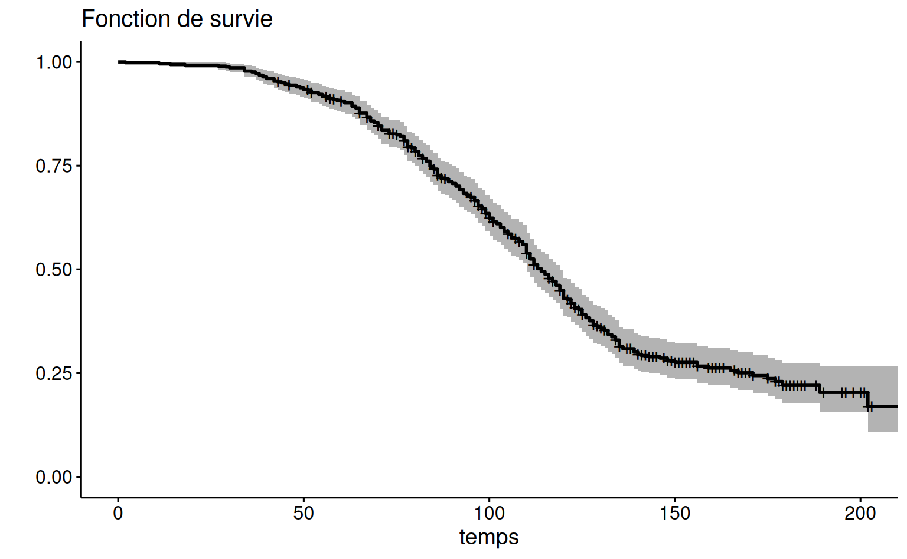
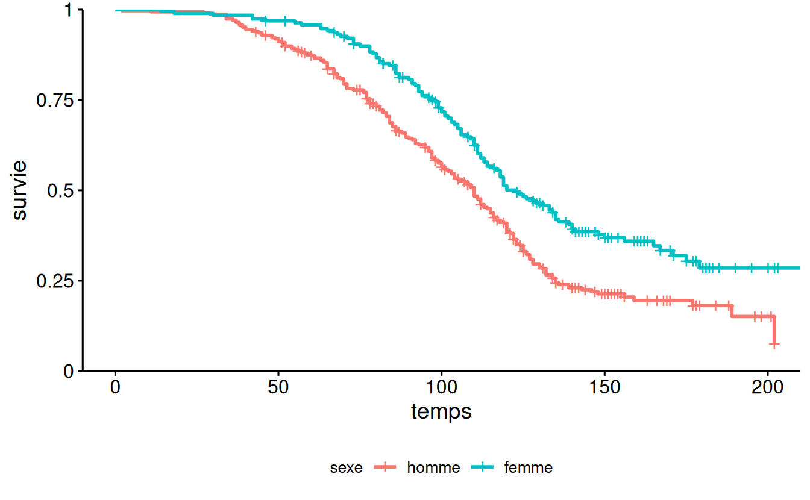
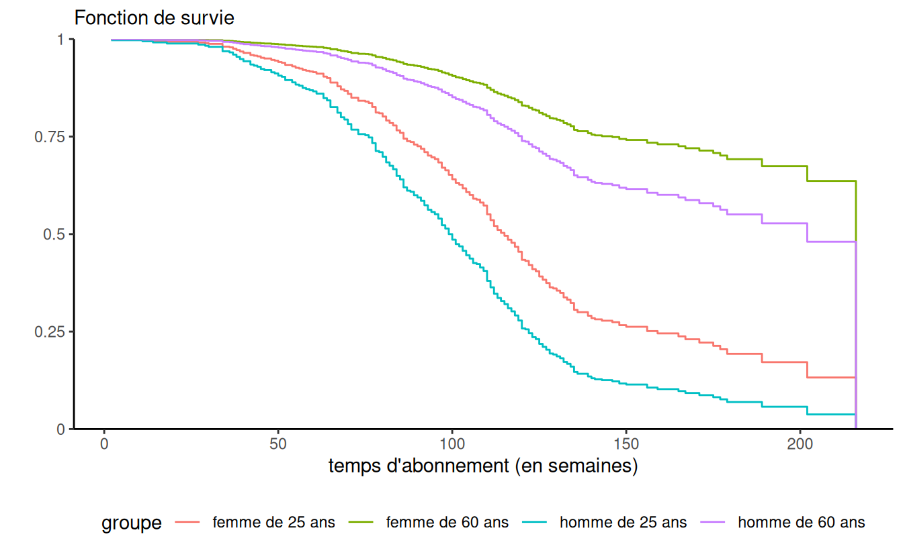
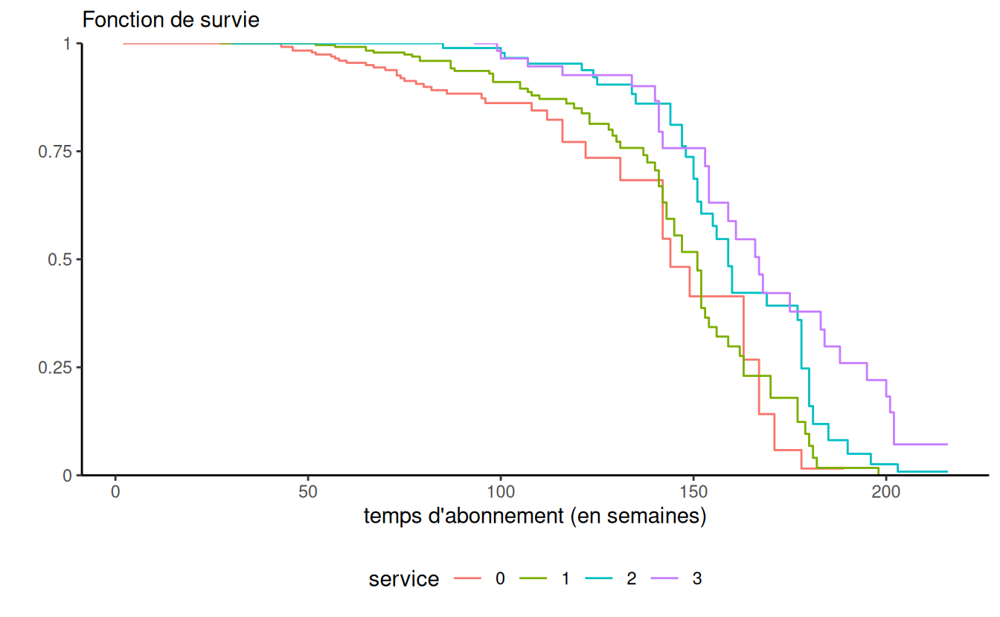

library(survival)
data(survie1, package = "hecmulti")
# Estimateur de Kaplan-Meier
# La réponse "temps"est le temps de survie
# et l'indicateur de censure "censure" est
# "0" pour censuré à droite, "1" pour événement
kapm <-
survfit(Surv(temps, censure) ~ 1,
conf.type = "log",
data = survie1)
summary(kapm)
quantile(kapm)
plot(kapm,
ylab = "fonction de survie",
xlab = "temps") 6 Analyse de survie
MATH 60602 - Analyse multidimensionnelle appliquée, HEC Montréal.
6.1 Introduction
Cette section traite de temps avant qu’un événement survienne. Le traitement de ce type de données, dites données de survie en référence au domain médical, est particulier parce que l’information disponible est incomplète. Plusieurs mécanismes peuvent impacter la survie.
On considère comme exemple une étude sur le chômage dû à la crise du coronavirus. On s’intéresse à tous ceux qui étaient en recherche active d’emploi entre mars et juin; seuls ceux qui étaient au chômage durant cette période seront considérés. Certaines personnes seront déjà au chômage en avril et donc leur durée de chômage en mars est déjà longue (troncature à gauche). Lors de notre suivi, d’autre mentionneront avoir trouvé un emploi lors de notre appel, mais ne pourront nous renseigner sur la date exacte de leur embauche: cette dernière précèdera notre prise de contact, mais nous est inconnue (censure à gauche). D’autres personnes seront toujours au chômage en juin à la fin de l’étude et on ignorera le nombre réel de mois passés au chômage (censure à droite). Enfin, certaines personnes cesseront de chercher activement un emploi et donc quitteront l’étude. Tous ces méchanismes (complexes) peuvent être dictés par certaines covariables (employabilité, découragement) et être aléatoires ou pas. Pour estimer le taux de chômage, il faudra prendre en compte les méchanismes de survie dans notre modèle. On se concentrera sur le cas simple des données censurées à droite de façon aléatoire.
6.1.1 Exemple du temps d’abonnement
Une entreprise oeuvrant dans le secteur des télécommunications s’intéresse aux facteurs influençant le temps qu’un client reste abonné à son service de téléphone cellulaire. Des données provenant d’un échantillon de clients se trouvent dans le fichier survie1, qui contient les variables suivantes:
- \(\texttt{temps}\): temps (en semaines) que le client est resté abonné au service de téléphone cellulaire. Il s’agit du vrai temps si le client n’est plus abonné et d’un temps censuré à droite si le client est toujours abonné.
- \(\texttt{censure}\): variable binaire qui indique si la variable \(\texttt{t}\) est censurée (\(0\) si le client est toujours abonné) ou non (\(1\), la variable \(\texttt{t}\) est la durée finale de l’abonnement).
- \(\texttt{age}\): âge du client au début de l’abonnement.
- \(\texttt{sexe}\): sexe du client, soit femme (\(1\)), soit homme (\(0\)).
- \(\texttt{service}\): nombre de services en plus du cellulaire auquel le client est abonné parmi internet, téléphone fixe, télévision (câble ou antenne parabolique).
- \(\texttt{region}\): région où habite le client en ce moment (valeurs entre 1 et 5).
6.1.2 Contexte
On s’intéresse au temps avant qu’un événement survienne. On observe chaque sujet jusqu’à ce que l’une des deux choses suivantes se produise : l’événement survient avant la fin de la période d’observation ou bien l’étude se termine et l’événement n’est toujours pas survenu. Dans l’exemple, l’événement correspond au fait d’interrompre son abonnement. On dispose donc d’une variable « temps », que l’on nomme \(T\), pour chaque individu qui est soit censurée soit non censurée. Si l’individu a expérimenté l’événement avant la fin de la période d’observation, la valeur de \(T\) n’est pas censurée. Si l’événement n’est toujours pas survenu à la fin de la période d’observation, la valeur de \(T\) est censurée. Pour chaque individu, on dispose également d’un ensemble de variables explicatives \(X_1, \ldots, X_p\). Pour l’instant, supposons que les valeurs de ces variables sont fixes dans le temps mais on reviendra plus loin au cas où leurs valeurs peuvent varier dans le temps. Bien que le terme analyse de survie semble implicitement référer à la santé, de nombreux autres exemples sont envisageables
- temps qu’un client demeure abonné à un service offert par notre compagnie.
- temps de survie d’un individu après avoir été diagnostiqué avec un certain type de cancer.
- ancienneté d’un travailleur au service d’une compagnie.
- durée de vie d’une franchise.
- temps avant la faillite d’une entreprise (ou d’un particulier).
- temps avant le prochain achat d’un client.
- temps durant lequel un(e) employé(e) est au chômage.
Si aucune observation n’est censurée, c’est-à-dire, si on a observé le « vrai » temps pour chaque sujet, on pourrait alors simplement modéliser \(T\) en incluant des covariables dans les paramètres de vraisemblance d’une loi positive (par exemple, une régression log-linéaire). En revanche, si des observations sont censurées dans l’échantillon, leur omission biaiserait l’analyse.
Ce chapitre se veut une introduction à l’analyse de données de survie. Comme le développement de la théorie de l’analyse de survie est assez complexe (plus encore que celle de la régression linéaire ou logistique), on s’intéressera ici uniquement aux principes de base afin d’être en mesure d’appliquer les méthodes et de bien interpréter les résultats. Plusieurs extensions sont également possibles. Un survol de ces dernières sera effectué dans des sections plus loin.
Il existe deux grandes approches pour analyser des données de survies :
- nonparamétrique ou semi-paramétrique: estimateur de Kaplan–Meier, modèle de Cox (à risques proportionnels).
- paramétrique : modèle paramétrique avec loi continue (Weibull, log-normal, log-logistique, gamma).
Nous discuterons seulement de la première approche dans ce chapitre. Le tableau suivant fait une analogie entre ce que nous ferons dans ce chapitre et des méthodes que vous connaissez.
| réponse \(Y\) | résumé descriptif | comparaison de deux groupes | modèle général |
|---|---|---|---|
| continue | moyenne | test-\(t\) pour deux échantillons | régression linéaire |
| binaire | proportion | test d’indépendance du khi-deux | régression logistique |
| temps de survie (censure à droite) | fonction de survie temps de survie médian | test log-rang test de Wilcoxon généralisé (Gehan) | modèle de Cox |
La structure de données de base que l’on doit avoir pour travailler est la suivante:
- une variable temps, \(T\).
- une variable binaire \(C\) (censure).
- d’autres variables explicatives \(X_1, \ldots, X_p\), une par colonne.
6.2 Fonctions de survie et de risque
Un des éléments de base d’une analyse de survie (survival analysis) est la fonction (ou courbe) de survie. Soit \(F(t)=\Pr(T \leq t)\) la fonction de répartition du temps de survie \(t\) et \(f(t) = \mathrm{d} / \mathrm{d} t F(t)\). La fonction de survie est \[\begin{align*} S(t)= \Pr(T > t) = 1-F(t) \end{align*}\] et donne la probabilité que le temps de survie soit supérieur à \(t\). On verra plus loin comment estimer cette fonction avec un échantillon et comment tester l’égalité de deux (ou plusieurs) fonctions de survie.
La fonction de risque (en anglais, hazard) est \[\begin{align*} h(t) = \frac{f(t)}{S(t)} \end{align*}\] où \(f(t)\) est la fonction de densité (pour \(T\) continu) ou de masse pour \(T\) discret. Dans le cas discret où le temps peut seulement prendre les valeurs \(0, 1, 2, \ldots\), la fonction de risque est donc simplement la probabilité que l’événement survienne au temps \(t\), étant donné qu’il n’était pas survenu avant, \[\begin{align*} \Pr(T=t \mid T > t) = \Pr(T=t) / \Pr(T >t) = f(t)/S(t); \end{align*}\] c’est une probabilité conditionnelle. Dans le cas général, la fonction de risque est nécessairement positive mais peut prendre des valeurs supérieures à un. On ne peut donc pas, à strictement parler, la voir comme une probabilité et c’est pourquoi on parle plutôt de risque. En fait, cette fonction mesure le risque instantané que l’événement survienne au temps \(t\), étant donné qu’il n’était pas survenu avant.
Cette fonction est importante car il s’agit de celle que nous allons modéliser avec le modèle de régression de Cox. Si, en régression logistique, on modélise le logarithme des cotes, on modélise plutôt la fonction de risque en analyse de survie. Les fonctions de survie et de risque sont intimement reliées et \[\begin{align*} h(t) = - \frac{\mathrm{d} \ln\{S(t)\}}{\mathrm{d} t}, \qquad \qquad S(t) = \exp \left\{ -\int_0^t h(u) \mathrm{d} u\right\}. \end{align*}\] Ainsi, si on connaît la fonction de survie, on peut retrouver la fonction de risque et vice-versa. Par conséquent, un modèle pour la fonction de survie spécifie une fonction de risque (et vice-versa).
6.3 Estimation d’une courbe de survie et de risque
L’estimateur nonparamétrique le plus couramment utilisé pour l’estimation de la fonction de survie en présense de censure à droite est l’estimateur de Kaplan–Meier. De plus, cette méthode est nonparamétrique en ce sens qu’on ne suppose aucun modèle et qu’on suppose uniquement que la censure est non-informative.
Si l’échantillon ne contient aucune observation censurée (on a des temps exacts pour tous les sujets), l’estimateur de Kaplan–Meier de la fonction de survie à un temps \(t\) donné est alors simplement la proportion des observations dans l’échantillon qui possède un temps de survie supérieur à \(t\). Par convention, on considère qu’une observation censurée à droite faisait partie de l’ensemble d’observations à risque au temps de censure observé.
On considère l’exemple des temps d’abonnement pour illustrer le concept. L’estimation de la fonction de survie selon la méthode Kaplan–Meier est obtenue grâce aux commandes suivantes:
La fonction résumé (summary) renvoit l’estimation de la fonction de survie pour chaque temps d’échec (événement): l’estimateur est indéfini à ces valeurs. Le Tableau 6.1 offre une sortie (tronquée) du résumé, modifié pour mieux illustrer les changements. L’estimation de la probabilité que le temps d’abonnement soit supérieur à 30 semaines est \(\widehat{S}(30)=0.986\).
| temps | nb à risque | nb échecs | nb cumul. | survie | erreur-type |
|---|---|---|---|---|---|
| 2 | 500 | 1 | 1 | 0.998 | 0.002 |
| 11 | 499 | 1 | 2 | 0.996 | 0.003 |
| 14 | 498 | 1 | 3 | 0.994 | 0.003 |
| 18 | 497 | 1 | 4 | 0.992 | 0.004 |
| 27 | 496 | 1 | 5 | 0.990 | 0.004 |
| 29 | 495 | 1 | 6 | 0.988 | 0.005 |
| 30 | 494 | 1 | 7 | 0.986 | 0.005 |
| 34 | 493 | 4 | 11 | 0.978 | 0.007 |
| 189 | 13 | 1 | 331 | 0.204 | 0.028 |
| 202 | 6 | 1 | 332 | 0.170 | 0.039 |
| 216 | 2 | 2 | 334 | 0.000 |
ggsurv <- survminer::ggsurvplot(kapm, palette = 1)
ggsurv$plot + # objet de class 'ggplot'
theme(legend.position = "none") +
labs(x = "temps",
subtitle = "Fonction de survie",
y = "")
On peut également utiliser la fonction quantile pour obtenir une estimation des quartiles et un intervalle de confiance On utilise généralement le temps de survie médian (au lieu de la moyenne) dans ce type d’étude. Ici, l’estimé du temps de survie médian est de 114 semaines: on estime que la moitié des clients vont avoir une durée d’abonnement supérieure à 114 semaines. De même, la moitié des clients vont avoir une durée d’abonnement inférieure à 114 semaines. Un intervalle de confiance de niveau 95% pour ce temps médian est [\(110; 119\)].
Un estimé de la moyenne et de l’écart-type est donné, mais ce dernier est biaisé (trop bas) puisque les données censurées ne donnent qu’une borne inférieure pour la vraie valeur. Avec un modèle paramétrique pour la survie (par ex., une loi exponentielle), les paramètres estimés du modèle dicteraient ces deux valeurs. Le modèle de Kaplan–Meier estime la survie, mais si la plus grande observation est censurée, la courbe n’atteindra pas zéro.
Le graphique de la fonction de survie permet de lire le temps de survie pour une probabilité donnée. Les bandes donnent un intervalle de confiance ponctuel de niveau 95% pour chaque temps donné.
Une information pertinente de la sortie est le nombre de données censurées: parmi les 500 observations, il y a 334 clients qui ont terminé leur abonnement et 166 qui sont censurées (le client est toujours abonné et le temps est donc une borne inférieure de la durée d’abonnement). Les données censurées contiennent moins d’information que les temps observés de défaillance puisqu’on sait uniquement la borne inférieure de la plage possible des valeurs pour le vrai temps de défaillance.
6.3.1 Calcul de l’estimateur de Kaplan–Meier
Cette partie peut être omise; elle est incluse seulement par souci de complétude. Soit \(T_1, \ldots, T_n\) les \(n\) réalisations aléatoires de la variable temps (certaines censurées, d’autres pas). Supposons qu’il y a \(m\) temps distincts où au moins un individu expérimente l’événement. Soient \(t_{(1)} < \cdots < t_{(m)}\), ces temps ordonnés en ordre croissant et \(r_i\) le nombre d’individus à risque au temps \(t_{(i)}\) (les individus qui n’ont pas encore expérimenté l‘événement, et qui ne sont pas encore censurés avant \(t_{(i)}\)). On note \(d_i\) le nombre d’individus qui expérimentent l’événement au temps \(t_{(i)}\). L’estimateur de Kaplan–Meier de la fonction de survie à un temps \(t\) est \[\begin{align*} \widehat{S}(t) = \left( 1- \frac{d_1}{r_1}\right) \times \cdots \times \left( 1- \frac{d_{i(t)}}{r_{i(t)}}\right), \qquad t_{(1)} \leq t \leq t_{(m)}, \end{align*}\] où \(i(t) =\max(j \in \{1, \ldots, m\}: t \geq t_{j})\), soit le plus grand indice parmi \(1, \ldots, m\) tel que \(t \geq t_{i(t)}\). Par convention, si \(t < t_{(1)}\), on fixe \(\widehat{S}(t)=1\). La fonction de survie n’est pas définie aux temps de défaillance observée, mais la convention veut qu’elle soit continue à gauche.
6.4 Comparaison de deux courbes de survie
Supposons que les individus ont été divisés en deux groupes et que \(S_1(t)\) et \(S_2(t)\) dénotent respectivement la fonction de survie du premier groupe et du deuxième groupe. On est souvent intéressé à tester l’égalité des fonctions de survie, c’est-à-dire, les hypothèses \(\mathscr{H}_0: S_1(t) = S_2(t)\) pour tout \(t\) et \(\mathscr{H}_1: S_1(t) \neq S_2(t)\) pour au moins une valeur de \(t\).
Par exemple, dans une étude sur le temps de survie après avoir été diagnostiqué avec un certain type de cancer, on pourrait vouloir comparer le temps de survie des individus ayant reçu le traitement standard (groupe 1) au temps de survie des individus ayant reçu un nouveau traitement (groupe 2).
Les deux tests utilisés habituellement sont le test du log-rang (log-rank test) et le test de Wilcoxon généralisé (ou test de Gehan).
Testons l’hypothèse que la courbe de survie des clients masculins est la même que celle des clients féminins dans l’exemple des données d’abonnement:
## valeur-p du test asymptotique
survdiff(formula = Surv(temps, censure) ~ sexe,
data = survie1)Call:
survdiff(formula = Surv(temps, censure) ~ sexe, data = survie1)
N Observed Expected (O-E)^2/E (O-E)^2/V
sexe=0 309 217 181 7.33 16.4
sexe=1 191 117 153 8.63 16.4
Chisq= 16.4 on 1 degrees of freedom, p= 5e-05 # valeur-p exact par simulation
# (pour petits échantillons, utiliser distribution="exact")
coin::logrank_test(
Surv(temps, censure) ~ factor(sexe),
data = survie1,
distribution = coin::approximate(nresample = 1e5))
Approximative Two-Sample Logrank Test
data: Surv(temps, censure) by factor(sexe) (0, 1)
Z = -4.1415, p-value = 4e-05
alternative hypothesis: true theta is not equal to 1# Le test du log-rang calcule si les
# deux courbes sont identiques
# Idée de base: sous H0, les étiquettes
# 'sexe' ne sont pas pertinentes
# On peut les permuter et comparer les courbesOn retrouve dans la sortie les estimés de la fonction de survie, de même que les quartiles par strate: la première strate correspond aux hommes (sexe=0) et la deuxième aux femmes (sexe=1).
Si on utilise les méthodes (print, summary, plot, quantile), on obtiendra les résultats pour chaque strate (ou niveaux de la variable catégorielle). Par exemple, il y a 309 hommes et 191 femmes et l’estimation du temps de survie médian est de 110 semaines pour les hommes et de 123 semaines pour les femmes.
La fonction survdiff avec la formule retourne le résultat du test asymptotique du log-rang pour l’hypothèse d’égalité des fonctions de survie. La valeur-\(p\) du test est inférieure à \(10^{-4}\): on rejette donc \(\mathscr{H}_0\) pour conclure qu’il y a donc une différence significative entre les deux courbes de survie.
Les courbes de survie selon le sexe sont représentées dans la Figure 6.2. On voit que la courbe des femmes est systématiquement au-dessus de celle des hommes. Les femmes ont donc tendance à rester abonnées plus longtemps que les hommes, et cette différence est significative.
plot(survfit(Surv(temps, censure) ~ sexe,
data = survie1),
conf.int = FALSE,
col = c("red", "blue"),
xlab = "temps",
ylab = "fonction de survie")
Il est également possible de tester l’égalité des courbes de survie avec plus de deux groupes. Par exemple, s’il y a \(k\) groupes, l’hypothèse nulle est alors \(\mathscr{H}_0: S_1(t)=S_2(t)=\cdots = S_k(t)\) pour tout \(t\), versus l’alternative qu’au moins deux des fonctions ont une valeur différente pour au moins une valeur de \(t\); la loi nulle asymptotique du test est alors \(\chi^2_{k-1}\).
L’estimateur de Kaplan–Meier ne permet pas l’inclusion de variables explicatives à proprement parler: si on peut veut les différences au niveau de la survie selon les modalités d’une variable explicative catégorielle, on divise pour ce faire l’échantillon en sous-groupes et on utilise l’estimateur de Kaplan–Meier pour chacune des modalités en gardant en tête que cela réduit la taille de l’échantillon disponible et que l’estimation résultante est possiblement trop incertaine pour être utile.
En résumé
- L’analyse de survie est l’étude de temps d’attente (variable positive) avant que survienne un événement.
- L’étude des temps de défaillance nécessite l’utilisation d’outils statistiques spécifiques en raison des mécanismes de censure et de troncation.
- La fonction de survie \(S(t)\) encode la probabilité que le temps de défaillance excède le temps \(t\).
- La fonction de risque encode la probabilité de mourir au temps \(t\) sachant qu’on a survécu jusque là.
- La connaissance de la fonction de survie permet d’obtenir la fonction de risque et vice-versa.
- Le mécanisme d’information partielle le plus courant en analyse de survie est la censure à droite (on ne connaît qu’une borne inférieure pour le temps de défaillance, l’événement n’étant toujours pas survenu au temps donné).
- Si on traitait les temps de censure comme des temps de défaillance observée, on sous-estimerait la durée de survie.
- L’estimateur de Kaplan–Meier est l’estimateur du maximum de vraisemblance nonparamétrique si on a de la censure à droite aléatoire ou non-informative. Il ne fait aucun postulat sur la distribution de la survie.
- Pour que l’estimation soit de qualité, il faut un nombre conséquent d’observations (disons 1000). La quantité d’observations censurées impacte la précision de l’estimation.
- L’estimateur est déficient si le plus grand temps observé est censuré à droite (l’estimation de la fonction de survie ne décroît pas à zéro)
- Le test du log-rang permet de valider si deux fonctions de survie sont égales (en tout temps).
- On peut estimer la fonction de survie indépendamment pour chaque modalité d’une variable explicative catégorielle en stratifiant: cela réduit la taille de l’échantillon pour chaque strate.
6.5 Modèle à risques proportionnels de Cox
Le modèle à risques proportionnels de Cox (proportional hazard model) est l’un des modèles les plus utilisés pour l’analyse des données de survie.
6.5.1 Description du modèle de Cox
Soit \(h(t; \boldsymbol{x})\) la valeur de la fonction de risque au temps pour un individu dont les valeurs des variables explicatives sont \(X_1=x_1, \ldots, X_p=x_p\). Le modèle à risques proportionnels est \[\begin{align*} h(t; \boldsymbol{x}) = h_0(t)\exp(\beta_1x_1 + \cdots + \beta_p x_p) \end{align*}\] où \(h_0(t)\) est la fonction de risque de base; il n’est pas nécessaire de spécifier cette dernière, d’où la nature semiparamétrique du modèle de Cox. Le postulat de risques proportionnels implique que le terme de droite \(\exp(\mathbf{X}\boldsymbol{\beta})\) ne dépend pas du temps, et plus particulièrement \(\beta_1, \ldots, \beta_p\) ne dépend pas du temps. Nous verrons subséquemment une extension qui permet de prendre en compte les variables explicatives dont la valeur change dans le temps en scindant ces observations.
Lorsque toutes les variables explicatives prennent la valeur zéro, \(\boldsymbol{X}=\boldsymbol{0}\), on recouvre \(h(t; \boldsymbol{0})= h_0(t)\). Par conséquent, la fonction \(h_0(t)\) peut être interprétée comme la fonction de risque lorsque toutes les variables explicatives valent zéro. Toutefois, tout comme la valeur de l’ordonnée à l’origine dans un modèle de régression linéaire, cette interprétation n’est pas nécessairement valide si la situation où toutes les variables explicatives valent zéro n’est pas possible ou si elle ne survient pas dans notre échantillon.
La deuxième partie du modèle, \(\exp(\beta_1x_1 + \cdots + \beta_p x_p)\), vient modéliser l’effet d’un changement des valeurs des variables explicatives sur la fonction de risque de base. Tout comme dans le cas de la régression logistique (l’effet des variables sur la cote), c’est un effet multiplicatif, d’où le terme risques proportionnels.
Pour l’interprétation des paramètres, il sera plus simple de penser en termes de rapport de risque (hazard ratio), qui est défini comme étant le rapport des fonctions de risque pour deux ensembles de valeurs des variables explicatives. Pour simplifier l’illustration, supposons que nous avons seulement une variable explicative \(X\) et que \(h(t; x) = h_0(t)\exp(\beta x)\). Le rapport de risque lorsque \(X=x_1\) par rapport à \(X=x_0\) est \[\begin{align*} \frac{h(t; x_1)}{h(t; x_0)} = \exp\{\beta(x_1-x_0)\}. \end{align*}\] Par conséquent, l’impact d’une augmentation de \(X\) d’une unité (quand \(x_1-x_0=1\)) est \(\exp(\beta)\). Ainsi, pour chaque augmentation d’une unité pour \(X\), le risque que l’événement survienne est multiplié par \(\exp(\beta)\).
Le terme risques proportionnels fait référence à la situation où le rapport de risque dépend seulement de la différence \(x_1-x_0\) et non pas du temps lui-même. Le rapport de risque est constant par rapport au temps \(t\). Cela implique que l’effet d’une variable est stable dans le temps. Nous verrons plus loin comment faire en sorte que l’effet d’une variable puisse varier dans le temps.
Débutons avec un exemple simple en utilisant les données d’abonnement: on ajuste un modèle de Cox en utilisant seulement la variable binaire sexe.
cox1 <- coxph(Surv(temps, censure) ~ sexe,
data = survie1,
ties = "exact")
# Coefficients, tests et IC 95% de Wald
summary(cox1)
# Test du rapport de vraisemblance
car::Anova(cox1, type = 3)La sortie inclut notamment des tests de significativité globale basés sur la vraisemblance comparant le modèle sans variable explicative avec celui ajusté (rapport de vraisemblance, score et Wald). Ces trois statistiques ciblent la même hypothèse, aussi on peut ne s’attarder qu’au test du rapport de vraisemblance, qui est plus fiable et généralement plus puissant. Le tableau des coefficients donne les estimations \(\widehat{\beta}\). Le rapport de risque pour sexe=1 versus sexe=0 est \(\exp(\widehat{\beta})\), tandis qu<on obtiendrait le rapport de risque pour sexe=0 versus sexe=1, soit \(\exp(-\widehat{\beta})\). Les statistiques de test et la valeur-\(p\) associée sont basées sur la statistique de Wald, soit \(\widehat{\beta}/\mathsf{se}(\widehat{\beta})\), tandis que les intervalles de confiance à 95% pour le rapport de risque sont des intervalles de Wald de la forme ${ ()} pour le rapport de risque. Un rapport de risque de 1 signifie que le risque n’est pas affecté par la variable explicative. Ici, le test correspondant à l’hypothèse nulle \(\beta=0\) ne mène pas au rejet de l’hypothèse qui veut que la variable n’impacte pas le risque. On pourrait obtenir les intervalle
| terme | exp(coef) | borne inf. | borne sup. |
|---|---|---|---|
| sexe | 0.63 | 0.5 | 0.79 |
Il y a une seule variable explicative, le sexe de l’individu. L’estimation du paramètre de l’effet de sexe est -0.47. Ce paramètre est significativement différent de \(0\) (valeur-\(p\) du test du rapport de vraisemblance inférieure à \(10^{-10}\)). Pour l’interprétation, on utilise la colonne exp(coef) qui contient la valeur \(\exp(\hat{\beta}_{\texttt{sexe}}) = \exp(-0.466) = 0.628\). Ainsi, le rapport du risque d’une femme par rapport à un homme est \[\begin{align*}
\frac{\hat{h}(t; \texttt{sexe}=1)}{\hat{h}(t; \texttt{sexe}=0)}= 0.628.
\end{align*}\] Par conséquent, le risque qu’une femme interrompe son abonnement est 0.628 fois celui d’un homme. Une femme est donc moins à risque de quitter qu’un homme. Nous avions déjà vu cela à la section précédente lorsque nous avions comparé les courbes de survie des hommes et des femmes. Il est important de se rappeler qu’avec ce modèle, l’effet d’une variable est le même dans le temps (peu importe la valeur de \(t\)). Donc, une femme est moins à risque de quitter qu’un homme à tout moment, d’après ce modèle. Inversement, le ratio du risque d’un homme par rapport à une femme est \(\exp(-\hat{\beta}_{\texttt{sexe}}) = 1/0.628=1.59\). Ainsi, à tout moment, un homme a un risque d’interrompre son abonnement qui est 59% plus élevé que celui d’une femme.
Comme il y a un seul paramètre ici, les tests basés sur la vraisemblance pour \(\mathscr{H}_0: \boldsymbol{\beta}=\boldsymbol{0}\) reviennent à tester l’effet de la variable sexe. Le test de Wald est le même que celui du tableau des coefficients. Dans le cas particulier où il y a une seule variable explicative catégorielle comme ici, le test du score est équivalent au test du log-rang que nous avons vu à la section précédente à une petite différence près lorsqu’il y a des doublons (ex aequo) dans les temps de survie.
On pourrait également utiliser une variable explicative continue plutôt qu’une variable binaire; le principe est le même.
cox2 <- coxph(Surv(temps, censure) ~ age,
data = survie1,
ties = "exact")
summary(cox2)Le rapport de risque pour âge est 0.959 et donc le risque diminue de 4.1% chaque fois que l’âge augmente d’un an — le risque d’interrompre l’abonnement diminue lorsque l’âge augmente et cet effet est significatif (valeur-\(p\) du test de significativité globale inférieures à \(10^{-4}\)).
Généralement, on considérera le modèle de Cox avec toutes les variables explicatives simultanément. La variable \(\texttt{region}\) est nominale tandis que la variable \(\texttt{service}\) est ordinale (avec quatre modalités). Nous allons les incorporer, comme d’habitude, en utilisant des variables indicatrices avec \(\texttt{region=1}\) et \(\texttt{service=0}\) (le client n’est abonné à aucun autre service) comme catégories de référence.
with(survie1, table(service))
cox3 <- coxph(Surv(temps, censure) ~
age + sexe + region + service,
data = survie1,
ties = "exact")
summary(cox3)
# Effets de type 3
# (modèle avec toutes les variables sauf une)
car::Anova(cox3,
type = 3)| terme | exp(coef) | borne inf. | borne sup. |
|---|---|---|---|
| age | 0.95 | 0.94 | 0.96 |
| sexe | 0.51 | 0.40 | 0.65 |
| region2 | 0.67 | 0.47 | 0.98 |
| region3 | 1.03 | 0.73 | 1.46 |
| region4 | 0.80 | 0.57 | 1.13 |
| region5 | 0.97 | 0.68 | 1.37 |
| service1 | 0.35 | 0.27 | 0.45 |
| service2 | 0.17 | 0.12 | 0.25 |
| service3 | 0.12 | 0.07 | 0.19 |
| terme | statistique | ddl | valeur-p |
|---|---|---|---|
| age | 68.07 | 1 | <1e-04 |
| sexe | 32.82 | 1 | <1e-04 |
| region | 7.67 | 4 | 0.1 |
| service | 159.31 | 3 | <1e-04 |
Les effets des variables sont maintenant des effets marginaux. Ainsi, lorsque les autres variables demeurent fixes, le risque de quitter d’une femme est 0.511 fois plus petit que celui d’un homme. L’effet marginal (une fois que les autres variables sont incluses) de la variable sexe est significatif (valeur-\(p\) inférieure à \(10^{-4}\)).
Toutes autres choses étant égales, chaque augmentation de l’âge d’un an fait diminuer le risque d’interrompre l’abonnement. Plus précisément, le risque est multiplié par 0.95 lorsque l’âge augmente d’un an et cet effet est significatif.
Pour la variable service, l’interprétation se fait par rapport à la catégorie de référence, qui est la catégorie \(\texttt{0}\) (abonné à aucun autre service). Ainsi, si le client est abonné à un autre service, son risque de quitter est 0.353 fois celui d’un client qui n’est pas abonné à un autre service (toutes autres choses étant égales). Si le client est abonné à deux autres services, son risque de quitter est encore plus petit comparativement à un client qui n’est pas abonné à un autre service (rapport de risque de 0.174) Finalement, si le client est abonné à trois autres services, son risque de quiter est encore plus petit (rapport de risque de 0.115). Les paramètres de ces trois variables sont tous significatifs. Ainsi, les clients qui sont abonnés à un, deux ou trois services ont un risque de quitter qui est significativement plus faible que celui d’un client qui n’est pas abonné à un autre service. Le tableau d’analyse de déviance (effets de type 3) donne les statistiques du rapport de vraisemblance pour tester globalement la significativité d’une variable explicative modélisée avec plusieurs indicatrices. Pour la variable \(\texttt{service}\), le test présenté teste l’hypothèse nulle \(\mathscr{H}_0: \beta_{\texttt{service}_1}=\beta_{\texttt{service}_2}=\beta_{\texttt{service}_3}=0\) contre l’alternative qu’un moins un de ces trois paramètres est non-nul. Le test est largement significatif (statistique du rapport de vraisemblance valant 159.31 avec une valeur-\(p\) inférieure à \(10^{-4}\)). L’effet de la variable \(\texttt{service}\) est donc globalement significatif. Afin de comparer les autres modalités entre elles, par exemple afin de voir si le risque de quitter est différent entre un client qui a deux services et un autre qui a trois services, il suffit de changer la catégorie de référence à la commande class et de réajuster le modèle.
Finalement, la variable \(\texttt{region}\) n’est pas globalement significative (statistique du rapport de vraisemblance de 7.67 avec une valeur-\(p\) de 0.1 basée sur la loi asymptotique \(\chi^2_4\)).
6.5.2 Estimation de la fonction de survie pour des valeurs particulières des variables explicatives
Il est possible d’obtenir l’estimation de la fonction de survie pour des valeurs particulières des variables explicatives. Pour ce faire, il faut avoir un autre fichier de données qui contient les valeurs des variables explicatives pour lesquelles on veut une estimation de la fonction de survie. Si on ajuste le modèle avec aucune variable explicative, on retrouvera alors l’estimation de Kaplan–Meier de la fonction de survie.
Supposons qu’on ajuste le modèle avec les variables sexe et âge seulement dans l’exemple du temps d’abonnement, et que l’on désire la fonction de survie pour les hommes de 25 et 60 ans et pour les femmes de 25 et 60 ans. Le fichier survie2 contient les données qui seront utilisées à cette fin.
cox4 <- survival::coxph(
Surv(time = temps,
event = censure,
type = "right") ~
sexe + age,
data = survie1,
ties = "exact"
)
data(survie2, package = "hecmulti")
# Calculer la fonction de survie
fsurv <- survfit(cox4,
newdata = survie2,
type = "kaplan-meier")
# Tracer la fonction de survie selon le profil
plot(fsurv,
col = 1:4,
ylab = "survie",
xlab = "temps d'abonnement (semaines)",
bty = "n")
legend(x = "bottomleft",
legend = c("homme, 25 ans",
"femme, 25 ans",
"homme, 60 ans",
"femme, 60 ans"),
col = 1:4,
lty = 1,
bty = "n")
Les quatre fonctions de la Figure 6.3 correspondent aux profils pour lesquels nous désirons une estimation de la courbe de survie. La courbe 1 est pour les hommes de 25 ans, la courbe 2 pour les femmes de 25 ans, la courbe 3 pour les hommes de 60 ans et la courbe 4 pour les femmes de 60 ans. On voit donc que, parmi ces quatre profils, les hommes de 25 ans sont le plus à risque de quitter tandis que les femmes de 60 ans sont le moins à risque de quitter.
6.5.3 Postulat de risques proportionnels
Le modèle de Cox fait l’hypothèse que la fonction de risque de base est identique peut importe la valeur des variables catégorielles. La Figure 6.4 illustre à quoi ce postulat correspond dans un cas simple où il y a uniquement une variable binaire explicative.

Si ce n’est pas le cas, alors les résultats du modèle ne sont pas nécessairement fiables.
Comme pour un modèle de régression, il est possible de créer des résidus du modèles et de faire des graphiques diagnostics pour potentiellement infirmer le postulat de risques proportionnels (Grambsch and Therneau 1994). Si l’hypothèse tient la route, alors il ne devrait pas y avoir de tendance temporelle dans les résidus.
La commande cox.zph permet de tester le postulat de risques proportionnels à l’aide d’un test du score pour voir si la pente \(\beta(t)\) associée à une covariable est nulle en fonction du temps \(t\); si la valeur-\(p\) est grande, cela indique une absence de preuve. La fonction plot permet également d’obtenir un graphique des résidus en fonction du temps.

| effet | score | ddl | valeur-p |
|---|---|---|---|
| age | 4.22 | 1 | 0.040 |
| sexe | 1.11 | 1 | 0.291 |
| region | 3.81 | 4 | 0.432 |
| service | 10.97 | 3 | 0.012 |
| global | 21.23 | 9 | 0.012 |
Dans la Figure 6.5, on voit que le coefficient pour service augmente au fil du temps pour tous les groupes. On pourrait capturer cette interaction ou stratifier pour calculer le risque selon le nombre de services, au risque d’avoir trop peu d’observations pour estimer de manière fiable le risque de base. C’est explicable par le fait que les personnes avec plus de services tendent à avoir une survie plus longue.
diag_risqueprop <- cox.zph(cox3)
print(diag_risqueprop)
plot(diag_risqueprop)Si le postulat n’est pas validé, on peut interpréter l’effet comme un rapport de risque moyen pondéré sur la période de suivi, mais ce dernier change selon le moment (Stensrud and Hernán 2020). Cela implique également que les erreurs-types associées aux estimations sont trompeuses. La section suivante permettra de généraliser le modèle de Cox et traiter ce cas de figure.
6.6 Extensions du modèle de Cox
Dans cette section, nous allons voir deux extensions du modèle à risques proportionnels de base.
- Inclusion de variables explicatives dont la valeur change dans le temps.
- Modèle à risques compétitifs (competing risks) pour étudier la situation où il y a plusieurs manières de quitter l’état.
La vignette Using Time Dependent Covariates and Time Dependent Coefficients in the Cox Model de Therneau, Crowson et Atkinson du paquet survival offre des détails sur l’implémentation des méthodes qui suivent.
6.6.1 Variables explicatives dont la valeur change dans le temps
Il est clair que certaines caractéristiques d’un individu évoluent dans le temps (time-varying covariates). Si le sexe d’un individu est stable dans le temps, son revenu, son statut matrimonial, l’endroit où il habite, sont par contre des caractéristiques qui peuvent changer dans le temps. Il peut alors être intéressant d’en tenir compte dans l’analyse. Rappelez-vous que le modèle à risques proportionnels est \[\begin{align*} h(t; \boldsymbol{x}) = h_0(t) \exp(\beta_1x_1 + \cdots + \beta_px_p). \end{align*}\]
Supposons que la variable \(X_1\) change au fil du temps et que les autres demeurent fixes. On peut alors réécrire le modèle \[\begin{align*} h(t; \boldsymbol{x}) = h_0(t) \exp\{\beta_1x_1(t) + \cdots + \beta_px_p\}, \end{align*}\] où \(x_1(t)\) indique que la valeur de \(X_1\) dépend du temps \(t\).
Supposons que la variable \(\texttt{service}\), qui représente le nombre d’autres services souscrits, est la seule que nous voulons modéliser comme une variable qui varie dans le temps. Pour l’âge, nous prenons simplement l’âge au début de l’abonnement, idem pour la région.
Le plus difficile est de créer correctement le fichier de données pour effectuer ce genre d’analyse. Pour chaque personne, on peut identifier plusieurs moments où l’une ou l’autres des valeurs des variables explicatives change. Supposons qu’on a observé un événement au temps \(t_1\), et que la valeur de la covariable change à \(t_0\), où \(0 < t_0 < t_1\). On peut envisager cette observation donne deux contributions: une pour la trajectoire sur l’intervalle \((0, t_0]\) (censure à droite) et l’autre, après la modification, sur l’intervalle \((t_0, t_1]\) (troncature à gauche). Puisque la valeur est observée passée le premier intervalle, on a besoin de l’information sur toute la fenêtre (les deux bornes) et le type d’événement pour la première fenêtre sera de la censure à droite.
La base de données survie3 contient le format adéquat: une colonne evenement qui indique la censure (tout intervalle intermédiaire pour un individu est traité comme de la censure à droite) et les bornes de la fenêtre, debut et fin. Dans cet exemple, il y a eu au plus un changement dans la variable \(\texttt{service}\), comme présenté dans le fichier survie3. Les variables explicatives \(\texttt{age}\), \(\texttt{sexe}\) et \(\texttt{region}\) sont comme précédemment.
| id | debut | fin | evenement | age | sexe | region | service |
|---|---|---|---|---|---|---|---|
| 1 | 0 | 130 | 0 | 48 | 1 | 3 | 2 |
| 1 | 130 | 178 | 0 | 48 | 1 | 3 | 1 |
| 2 | 0 | 159 | 0 | 31 | 1 | 3 | 2 |
| 3 | 0 | 110 | 1 | 36 | 1 | 4 | 0 |
| 4 | 0 | 109 | 1 | 30 | 0 | 2 | 0 |
| 5 | 0 | 78 | 0 | 22 | 0 | 5 | 1 |
| 5 | 78 | 108 | 1 | 22 | 0 | 5 | 0 |
On regarde plus en détail le profil des cinq premiers clients présenté dans le Tableau 6.6, dont seuls deux ont changé le nombre d’abonnements; les individus 3–5 se sont désabonnés du service cellulaire à un moment donné. Le premier client était abonné à deux autres services au début de son abonnement au téléphone cellulaire mais, après 130 semaines d’abonnement, a effectué un changement à son forfait pour ne conserver qu’un autre service en plus du cellulaire. Pour le deuxième client, comme \(\verb+temps_ch+\) est manquante, il est toujours abonné à deux autres services et ce, jusqu’à la fin de l’étude.
data(survie3, package = "hecmulti")
cox4 <- coxph(Surv(time = debut,
time2 = fin,
event = evenement) ~
age + sexe + region + service,
data = survie3)L’interprétation se fait comme précédemment; on a omis l’option ties = "exact" parce que cette option est trop gourmande en calcul. Puisque c’est la valeur d’une variable qui varie dans le temps et non pas son effet, on a l’interprétation usuelle. Par exemple, le risque de quitter pour un client qui a un autre service est 0.601 fois celui d’un client qui n’a aucun autre service (référence). Le fait d’avoir deux ou trois services diminue encore plus le risque de quitter (rapports de risque de 0.265 et 0.209, respectivement).
6.6.2 Modèle à risques compétitifs
Parfois, la raison pour laquelle un individu quitte l’état étudié peut avoir un intérêt en soi. Par exemple si on s’intéresse au temps qu’un employé demeure au service de la compagnie, la distinction entre le fait qu’il ait démissionné ou bien qu’il ait été renvoyé peut avoir un impact sur l’effet des variables explicatives. Comme autre exemple, si on s’intéresse au temps de survie d’un individu après qu’il ait été diagnostiqué avec un certain type de cancer, il pourrait être important de distinguer selon la cause exacte de la mort.
De manière générale, supposons qu’il y a \(K\) manières possibles que l’événement survienne. On peut alors spécifier \(K\) fonctions de risques (une pour chaque manière) et obtenir le modèle de Cox à risques compétitifs (competing risks), \[\begin{align*} h_1(t; \boldsymbol{x})&= h_{01}(t) \exp(\beta_{11}x_1 + \cdots + \beta_{p1} x_p)\\ &\vdots\\ h_K(t; \boldsymbol{x})&= h_{0K}(t) \exp(\beta_{1K}x_1 + \cdots + \beta_{pK} x_p)\\ \end{align*}\] Notez que les coefficients sont différents d’une équation à l’autre. En estimant ce modèle, on obtient donc une estimation de l’effet des variables selon la raison du départ de l’état. De plus, on peut aussi inclure des variables dont la valeur change dans le temps, comme vu précédemment. Ce qui simplifie énormément la situation est qu’il est prouvé qu’on peut estimer les paramètres de chaque équation séparément sans perte de précision. Par conséquent, en pratique, il suffira d’ajuster \(K\) modèles de Cox séparément.
Dans notre exemple d’abonnement cellulaire, supposons que nous avons trois causes possibles pour la perte d’un client: soit il a interrompu son abonnement pour aller chez le compétiteur A, soit pour aller chez le compétiteur B, soit il n’a plus de cellulaire du tout.
Les données pour cet exemple se trouvent dans le fichier survie4. La seule nouveauté par rapport au fichier original est la variable \(\texttt{censure}\) qui est maintenant codée ainsi
- 1, si le temps est censuré (l’individu est toujours abonné à notre service)
- 2, si l’individu a quitté pour aller chez le compétiteur A
- 3, si l’individu a quitté pour aller chez le compétiteur B
- 4, si l’individu a quitté parce qu’il n’a plus besoin de cellulaire.
On peut calculer la fréquence de chaque modalité avec table. Ainsi, il y a donc 166 clients toujours abonnés, 170 qui nous ont quitté pour aller chez A, 121 pour aller chez B, et 43 qui n’ont plus de cellulaires.
Pour ajuster le modèle lorsque la cause du départ est le compétiteur A, le code est
# Rappel pour `event`:
# 1 pour observation,
# 0 pour censure à droite
# On utilise la convention TRUE = 1, FALSE = 0
data(survie4, package = "hecmulti")
cox5 <- coxph(Surv(time = temps,
event = censure == 2,
type = "right") ~
age + sexe + region + service,
data = survie4,
ties = "exact")
summary(cox5)| terme | exp(coef) | borne inf. | borne sup. |
|---|---|---|---|
| age | 0.95 | 0.94 | 0.97 |
| sexe | 0.44 | 0.32 | 0.62 |
| region2 | 0.54 | 0.32 | 0.92 |
| region3 | 0.82 | 0.50 | 1.35 |
| region4 | 0.72 | 0.45 | 1.16 |
| region5 | 1.05 | 0.66 | 1.66 |
| service1 | 0.38 | 0.27 | 0.54 |
| service2 | 0.18 | 0.11 | 0.30 |
| service3 | 0.11 | 0.05 | 0.22 |
Notez qu’on précise que les valeurs 1, 3 et 4 sont des observations censurées. Ici, l’événement d’intérêt est que le client est parti chez le compétiteur A. S’il est toujours abonné (\(\texttt{censure=1}\)), s’il est parti chez le compétiteur B (\(\texttt{censure=3}\)) ou s’il nous a quitté car il n’a plus de cellulaire (\(\texttt{censure=4}\)), alors l’événement « quitter pour aller chez A » n’est pas survenu. C’est pourquoi on doit traiter ces situations comme des censures.
Ainsi, on voit que l’événement est survenu 170 fois et qu’il y a 330 censures. L’interprétation des paramètres se fait comme précédemment. Sauf qu’il faut préciser qu’il s’agit du risque de quitter pour aller chez le compétiteur A. Par exemple, le risque de quitter pour aller chez le compétiteur A d’une femme est 0.444 fois le risque de quitter pour aller chez le compétiteur A d’un homme. Ainsi, les femmes sont moins à risque de quitter pour aller chez le compétiteur A que les hommes.
Pour ajuster le modèle lorsque la cause du départ est le compétiteur B, procède de la même manière. Notez que cette fois-ci, ce sont les valeurs 1, 2 et 4 de la variable censure qui correspondent au fait que l’événement n’est pas survenu. Il y a 121 clients qui ont quitté pour aller chez B et 379 cas autre (censure). L’interprétation des paramètres se fait en termes de risque de quitter pour aller chez le compétiteur B.
Si on ajuste le modèle pour le cas de figure où la cause de départ est que le client n’a plus besoin de cellulaire, on obtient une sortie similaire. Comme il y a seulement 43 événements (quitter car on n’a plus besoin de cellulaire), les estimations des paramètres sont moins précises, ce qu’on peut voir avec les erreurs-types qui sont plus élevés. Les observations censurées contiennent moins d’information que les événements, d’où cette perte de précision.
Dans R, on peut aussi ajuster simultanément tous les modèles en spécifiant que l’événement d’intérêt est un facteur: c’est alors la catégorie de référence qui fait fois de l’état de départ. Il faut également une variable qui identifie l’observation — dans le cas qu’on considère, c’est simplement une colonne avec des valeurs de \(1\) à \(n\).
rc_cox <- coxph(
Surv(time = temps,
event = factor(censure)) ~ sexe + age + service,
data = survie4 |>
dplyr::mutate(id = 1:nrow(survie4)),
id = id)On obtient l’ensemble des coefficients dans le tableau résumé, un pour chaque événement compétitif autre que la référence.
Si on voulait ajuster le modèle de Kaplan–Meier, pour une transition d’un état de base (abonné) vers un état dit absorbant (désabonnement, soit chez compétiteur A ou B ou abandon du cellulaire), il faut obligatoirement ajuster toutes les courbes simultanément. On ajustera le modèle multi-état en spécifiant un facteur pour l’événement, où encore une fois la catégorie de référence est abonnement (censure=1).
rc_km <- survfit(Surv(time = temps,
event = factor(censure)) ~ 1,
data = survie4)Les représentations graphiques pour le modèle à risque compétitif sont légèrement différente. Si on dichotomise l’événement d’intérêt (survie ou échec), il y a deux options possibles et la probabilité d’échec est complémentaire à la survie. Avec plus d’un choix, on obtiendra un graphique avec une estimation de la probabilité pour chaque modalité de l’événement: la Figure 6.6 montre ceci pour la sortie du modèle de Cox et le modèle de Kaplan–Meier en ajoutant la courbe correspondant à la probabilité de demeurer abonné.

6.7 Risques non proportionnels
Comme son nom l’indique, le modèle à risques proportionnels suppose que les risques sont proportionnels. Cela implique que l’effet d’une variable est stable dans le temps. Nous verrons dans cette section deux façons de modéliser le cas de risques non proportionnels.
6.7.1 Non-proportionnalité avec un terme d’interaction avec le temps
Pour simplifier l’exposition, supposons que nous avons une seule variable explicative \(X\). L’équation du modèle à risques proportionnels est \(h(t; x) = h_0(t)\exp(\beta x)\) et suppose que la fonction de risque de base \(h_0(t)\) est indépendante de la variable explicative \(X\). Une manière de modéliser la non-proportionnalité est d’inclure un terme d’interaction entre la variable et le temps. Il existe plusieurs façons de le faire. Par exemple, on pourrait inclure une nouvelle variable qui est le produit entre le temps et la variable \(X\). Le modèle est alors \[\begin{align*} h(t; x) = h_0(t) \exp(\beta_1x + \beta_2xt). \end{align*}\] Pour ce modèle, le rapport de risque, pour une augmentation d’une unité de \(X\) est \(\exp(\beta_1+ \beta_2t)\) et dépend du temps \(t\): c’est un modèle avec risques non proportionnels. On retombe sur le modèle à risques proportionnels lorsque \(\beta_2=0\).
Supposons que l’effet du nombre de service augmente avec le temps. On peut inclure à la fois service, qui capture l’effet au temps zéro, et le surenchérissement ou la diminution à mesure que le temps d’abonnement progresse.
# Créer variables binaires par service
service_bin <- model.matrix(
~service,
data = survie1)[,-1]
# enlever ordonnée à l'origine (1e colonne)
survie1m <- cbind(survie1, service_bin)
cox_np <- survival::coxph(
Surv(temps, censure) ~
age + sexe + service +
tt(service1) + tt(service2) + tt(service3),
data = survie1m,
tt = function(x, t, ...){t * x})Le bloc code précédent illustre comment créer le terme non proportionnel: on spécifie avec l’option tt() la variable qui change dans le temps et on spécifie par la suite la nature de l’interaction temporelle en définissant une fonction tt.
Les variables catégorielles n’étant pas supportées en l’état, elles doivent préalablement être transformées en variable indicatrices binaires. Une fois les nouvelles variables dans la base de données, on procède à la spécification du terme de risque non proportionnel.
| terme | exp(coef) | test de Wald | valeur-p |
|---|---|---|---|
| age | 0.953 | -7.368 | <0.001 |
| sexe | 0.543 | -5.241 | <0.001 |
| service1 | 0.144 | -4.293 | <0.001 |
| service2 | 0.072 | -3.762 | <0.001 |
| service3 | 0.010 | -4.139 | <0.001 |
| tt(service1) | 1.010 | 2.173 | 0.0298 |
| tt(service2) | 1.010 | 1.584 | 0.1132 |
| tt(service3) | 1.023 | 2.476 | 0.0133 |
Le Tableau 6.8 contient les résultats. Les coefficients pour l’interaction avec \(t\) sont petits, mais c’est parce que la variable temps n’est pas standardisée et qu’elle s’étend de 0 à 200 semaines: de petites variations sont possiblement importantes quand le temps augmente. Les estimations des coefficients pour l’interaction sont tous positifs, ce qui suppose que le risque augmente avec le temps. Si on considère comme source plausible d’effet du nombre de services un quelconque rabais, il semble que cet effet protecteur s’amenuise. Deux des termes d’interaction sont significatifs à niveau 5% (statistiques de Wald \(Z\) de 2.173, 1.584 et 2.476 et valeurs-\(p\) correspondantes de 0.03, 0.113 et 0.013).
Ajustons maintenant un autre terme d’interaction, cette fois de manière à répliquer les changements qui interviennent au sein d’une variable explicative de manière plus simple.
# interaction entre service et temps
# objet avec 'tt' varie dynamiquement
cox6 <- coxph(
Surv(temps, censure) ~
tt(age) + sexe + service,
data = survie1,
tt = function(x, t, ...){x + t/52})
summary(cox6)L’âge (en années) augmente à mesure que le temps d’abonnement (en semaines) passe, d’où \(\texttt{age}(t) = \texttt{age} + t/52\). Ici, on inclut uniquement la variable transformée tt(age) et son effet est toujours fortement significatif pour expliquer le désabonnement potentiel: les personnes plus âgées sont moins susceptibles de résilier leur abonnement.
cox_np <- survival::coxph(
Surv(temps, censure) ~
tt(age) + sexe + service,
data = survie1,
tt = function(x, t, ...){x + t/52})
summary(cox_np)On spécifie avec l’option tt() dans la formule la variable qui change dans le temps et par la suite la nature de l’interaction temporelle avec l’argument tt.
| terme | exp(coef) | borne inf. | borne sup. |
|---|---|---|---|
| age | 0.91 | 0.87 | 0.95 |
| tt(age) | 1.00 | 1.00 | 1.00 |
| sexe | 0.52 | 0.41 | 0.65 |
| region2 | 0.70 | 0.48 | 1.02 |
| region3 | 1.03 | 0.73 | 1.46 |
| region4 | 0.80 | 0.56 | 1.12 |
| region5 | 0.97 | 0.69 | 1.37 |
| service1 | 0.36 | 0.28 | 0.46 |
| service2 | 0.18 | 0.12 | 0.26 |
| service3 | 0.12 | 0.07 | 0.20 |
L’interaction employée ici n’est pas la seule fonction du temps qu’on pourrait spécifier: on pourrait par exemple inclure une fonction de type escalier \(\mathrm{I}(T< t_0)\) qui indique que l’effet de la variable disparaît après le temps \(t_0\), si par exemple un rabais disparaît après une certaine durée d’abonnement, avec rabais * I(t<t0) pour une valeur numérique t0 fixée.
6.7.2 Stratification
Une manière de modéliser la non-proportionnalité est par la stratification. Il est important de comprendre qu’on ne pourra pas estimer l’effet de la variable de stratification comme d’ordinaire en étudiant le coefficient \(\beta\) associé.
Supposons que nous avons une variable explicative catégorielle \(Z=1, \ldots, K\) pour lequel le postulat de risque proportionnels n’est pas valide. On s’intéresse à l’effet des variables \(\mathbf{X}\). Typiquement, on ne s’intéresse pas directement à l’effet de la variable \(Z\). Le modèle de Cox avec stratification (pour la variable \(Z\)) est \[\begin{align*} h(t; \mathbf{x}, z=k) = h_k(t) \exp(\boldsymbol{\beta} \mathbf{x}), \end{align*}\] où \(h_k(t)\) est la fonction de risque de base quand \(Z=k\) (\(k=1, \ldots, K\)). L’effet des autres variables explicatives \(\mathbf{X}\) est supposé être le même peut importe la valeur de \(Z\), mais la fonction de risque de base peut différer. Le rapport de risque pour \(Z=k\) versus \(Z=j\) est \(h_k(t)/h_j(t)\); cette quantité dépend du temps \(t\), mais pas des autres caractéristiques mesurées par \(\mathbf{X}\). L’effet de la variable est donc variable dans le temps (et non pas constant). Ce modèle permet donc de modéliser la non-proportionnalité pour la variable \(Z\). Si on stratifie par rapport à une variable, il ne faut pas l’inclure dans le modèle en plus car elle est déjà modélisée via la stratification. Notez que les paramètres \(\boldsymbol{\beta}\) seront estimés à l’aide des données de toutes les strates, mais les fonctions de risque \(h_k(t)\) seront obtenues à l’aide des sous-échantillons correspondant aux valeurs de \(Z\).
L’avantage de la stratification est que cette méthode permet de modéliser n’importe quel changement dans l’effet d’une variable dans le temps sans devoir spécifier un type de changement particulier, comme lorsqu’on doit choisir la forme de l’interaction. Par contre, on perd la possibilité de tester l’effet de la variable de stratification on réduit la taille de l’échantillon pour l’estimation de la fonction de risque de base. On devrait principalement utiliser la stratification seulement avec des variables pour lesquelles nous n’avons pas besoin d’estimer l’effet (variables secondaires ou de contrôles).
# Stratification par service
cox7 <- coxph(Surv(temps, 1-censure) ~
age + sexe + strata(service),
data = survie1)
# Décompte par région
with(survie1, table(service)
# Coefficients
summary(cox7)| terme | exp(coef) | borne inf. | borne sup. |
|---|---|---|---|
| age | 0.96 | 0.94 | 0.97 |
| sexe | 0.61 | 0.44 | 0.85 |
On voit à la lecture de la sortie dans le Tableau 6.10 qu’il n’y a plus de paramètres pour la variable service. Les paramètres des autres variables s’interprètent comme d’habitude. On peut néanmoins résumer l’information pour service en calculant une statistique descriptive, par exemple les différences de survie à des temps donnés.
La Figure 6.7 illustre l’effet de la stratification sur l’estimation du risque de base et des courbes de survie. On voit que la résolution des courbes est moindre, puisque chaque fonction est estimée à partir d’un sous-ensemble des données.

Grambsch, Patricia M., and Terry M. Therneau. 1994. “Proportional hazards tests and diagnostics based on weighted residuals.” Biometrika 81 (3): 515–26. https://doi.org/10.1093/biomet/81.3.515.
Stensrud, Mats J., and Miguel A. Hernán. 2020. “Why Test for Proportional Hazards?” JAMA 323 (14): 1401–2. https://doi.org/10.1001/jama.2020.1267.